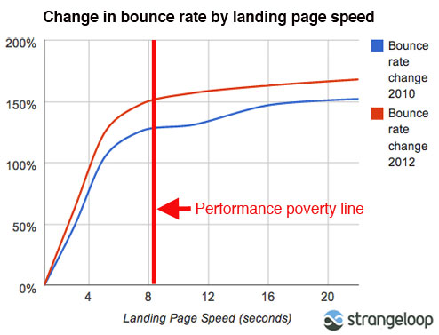

Drupal 8 Performance Insights
Making Drupal Fly
Presented by Gokul NK

Gokul N K
- Graduated from Rashtreeya Vidyalaya (RVCE)
- From Bangalore
- Drupal Architect at Azri Solutions
- Formerly a Java Developer @ Mindtree
- Drupal since 2011
- Lead Maintainer for Automatr Module
- Cofounder of Aziteez
- Bowling Addict
Overview
- Why performance is important
- Thumb Rules of performance
- Why performance is important for Drupal
- Performance in Drupal 7
- Drupal 8 Performance Enhancements
- Code Samples
Why Performance Matters
57% of online consumers will abandon a site after waiting 3 seconds for a page to load.
Source : webperformancetoday.com
Why Performance Matters
39% say speed is more important than functionality for most websites, while only one in five rank greater site functionality as more important.
Source : www.webperformancetoday.com/
Why Performance Matters
A 1-second delay in page load time equals 11% fewer page views, a 16% decrease in customer satisfaction, and 7% loss in conversions
Source : www.aberdeen.com
Performance Poverty Line
Source : Kissmetrics
Why Drupal Performance matters
The fat head is trampling the long tail
Fast CMSes suited for various use cases — from simple blogging to complex data modeling — are essential for the success of the long tail.
- Performance and Security are the two major challenges for Enterprise Adoption.
Source : https://zesty.io/blog/seo/page-load-times-affect-bounce-rate-and-conversion/
Drupal-8 is performant out of the box.
- Zero JavaScript is served to anonymous users by default.
- Support for responsive images.
- Partial page caching, which results in much faster serving of HTML of personalized pages for authenticated users.
- Sensible cache defaults like CSS/JS aggregation enabled, JS assets being loaded from the bottom
Thumb Rules of Caching
- Process Once Use Multiple Times.
- Live with stale data when possible
- Clear Caches infrequently and keep it very specific.
- When possible do the changes at the lowest level in the stack. LAMP - DCCc : Linux, Apache, Mysql, PHP, Drupal Core, Contrib and custom module.
Glossary for Cache
- Cache Hit.
- Cache Miss.
- Hit Ratio.
- Cache Bin.
- Cache Invalidation.
Cache Me If You Can
Is Caching Working
- Improve Cache Hit Ratio
- Nch X Tchs > Overload added by caching mechanism
- Simultaneous Cache Rebuilds doesn't take down the system.
There are two hard things in computer science:
- Cache invalidation,
- Naming things and
- Off-by-one errors
Cache Invalidation
- In Drupal7 we used to invalidate way too much, thus reducing the Cache Hit Ratio
- By default Drupal7 used to clear all entries from Page Cache Table when any node was edited.
Drupal7 Most scary function
function cache_clear_all($cid = NULL, $bin = NULL, $wildcard = FALSE) {
if (!isset($cid) && !isset($bin)) {
// Clear the block cache first, so stale data will
// not end up in the page cache.
if (module_exists('block')) {
cache_clear_all(NULL, 'cache_block');
}
cache_clear_all(NULL, 'cache_page');
return;
}
return _cache_get_object($bin)->clear($cid, $wildcard);
}
Succinct function?
- 3 parameters for the function
- 3 * 3 * 2 = 18 combinations in total
- Users end up invalidating more cache than necessary
Poormans Cache Implementation
public function call_method($controller, $method, $params = array(), $call_type = '_do_request_drupal_http') {
// We should include the parameters also in the cache id as the result changes based on
//them.
$cache_id = $controller . '_' . $method . '_' . json_encode($params);
cache_set($cache_id, $data);
}
Welcome CacheTags
- Associate cache entries with metadata, which then enables developers to clear caches based on the metadata.
- Cache Tags Module in drupal 7
Example Tags in Drupal 8
config:core.entity_form_display.node.text_book.default
config:core.entity_view_display.node.text_book.default
block_plugin:system_menu_block__account block_view config:block.block.bartik_account_menu config:system.menu.account rendered
Using Cache Tags
$cache = cache($bin);
$nid = 1;
$cache->set('cache_id_one', $some_value, CacheBackendInterface::CACHE_PERMANENT, array('node:' . $nid));
$cache->set('cache_id_two', $some_value, CacheBackendInterface::CACHE_PERMANENT, array('node:' . $nid));
Cache::invalidateTags(array('node:' . $nid));
// Or even Better
Cache::invalidateTags($node->getCacheTag())
getCacheTags()
- Each entity can implement its own getCacheTags
- So that other developers can precisely clear caches when dealing with your entity.
Cache Context
- Cache contexts are analogous to HTTP's Vary header.
- Cache contexts provide a declarative way to create context-dependent variations of something that needs to be cached.
- Cache contexts are now hierarchical.
Implementation of Cache Contexts
By User Module
/**
* {@inheritdoc}
*/
public function getCacheContexts() {
$contexts = parent::getCacheContexts();
// This filter depends on the current user.
$contexts[] = 'cache.context.user';
return $contexts;
}
Server-side dynamic content substitution
- All or none caching
- Personalization and random ordering
- In a way similar to Edge Side Includes.
- Substitution happens on server side just before sending the HTML.
- #post_render_cache is part of Render API.
Client-side dynamic content substitution
- Best Example new marker on comments.
- Offloading more work from Server to Client.
- Just in Time substitutions.
- Not critical, enhancements.